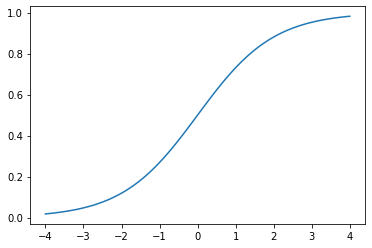

import torch.nn as nn
import numpy as np
import torchImage labeling vs classification models
Comparing the loss functions of label and classification models
The ‚Äòhello world‚Äô example for introducing deep learning based computer vision often involves classifying images as üê∂ or üê±. An alternative approach to classifying images is to instead apply labels. This is usually introduced in the context of multi-label classification i.e. where an image can have more than one label. In this blog post I discuss some of the differences between these two approaches, specifically the difference in loss functions, and how these two approaches might work better depending on the application. The post starts with a conceptual overview of the differences between these two approaches, before showing the different loss functions and then moving to a practical example of training these two different types of model.
Image Classification vs Image Labeling
In a classification model, an input can have only one label. This could be one of a few or one of a hundred, regardless of the number of potential classes, it is assumed that the input only belongs to one of these. With a model that applies labels this is not true an input can have one, multiple or no labels.
Sorting through family photos
We can use an analogy to illustrate the difference between these two approaches. Let’s say you were sorting through some old family photographs. You might “classify” the photos into one (and only one) of two photo albums, depending on whether they are black-and-white or colour. This would be comparable to using a classification model since each photo will go into exactly one of these two albums - a photo cannot be both simultaneously colour and black-and-white, and it cannot be neither colour nor black-and-white.
You may at the same time also want to make it easier to find photos of particular people in your family. You could do this by assigning labels to each photo, indicating or “tagging” the family members who appear in the photo. In this case, a photo may have one label (a photo of your sister), more than one label (a photo of your sister and aunt), or it may have no labels (a photograph of a landscape taken on a holiday). This would be analogous to a multi-label classification model.
The choice between using a model which performs classification or a model which assigns labels should be considered in relation to the role your model has. It is also useful to look a little bit more closely as how these different types of models work under the hood.
CrossEntropyLoss vs BCEWithLogitsLoss
When we create a model which does classifications or applies labels, the distinction, if using the same data is that they use different loss functions.
A classification model will use a variant of Cross Entropy Loss whilst the label model will use a BCE with Logits Loss. We’ll see how this is inferred by fastai below but fore now take my word for it…
Let’s take a look at a snippet of the Pytorch docs for each of these loss functions
CrossEntropyLoss
This criterion combines nn.LogSoftmax() and nn.NLLLoss() in one single class. It is useful when training a classification problem with C classes. If provided, the optional argument weight should be a 1D Tensor assigning weight to each of the classes. This is particularly useful when you have an unbalanced training set. Read more
BCEWithLogitsLoss
This loss combines a Sigmoid layer and the BCELoss in one single class. This version is more numerically stable than using a plain Sigmoid followed by a BCELoss as, by combining the operations into one layer, we take advantage of the log-sum-exp trick for numerical stability. Read more
Let’s see what these do to some activations. First we’ll import required packages
Exploring CrossEntropyLoss
We can create some fake activations. To start we’ll just consider one output with three classes. We’ll start with one to keep things simple for now.
one_act = torch.randn((1, 3)) * 1
one_acttensor([[ 0.9924, 0.8698, -0.0100]])We can think of these activations as probabilities for one of three classes. Let’s see what these sum to.
one_act.sum()tensor(1.0875)We can see that these activations don’t sum to 1. If we want our image input to belong to only one class, then the labels are not mutually exclusive of each other i.e. if one label probability is higher, another needs to be lower i.e. the probabilities need to add up to 1. Going back to the Pytorch explanation of CrossEntropyLoss we see that one component is nn.LogSoftmax(). What is particularly relevant here is that ‘softmax’ part. Let’s see what this does to our activation
softmax_acts = torch.softmax(one_act, dim=1)
softmax_actstensor([[0.4525, 0.0381, 0.5093]])You can probably already see how this has changed the nature of these activations. Let’s call sum on these outputs again.
softmax_acts.sum()tensor(1.)We now have a sum of 1! We can now treat this as the probability of an input image belonging to a particular class. We could then call argmax to find out which class the model is most confident about and use that as our prediction.
softmax_acts.argmax(dim=1)tensor([2])One of the potential issues that was mentioned about using a classification model was that it doesn’t account for ambiguities in the labels very well.
What is softmax doing?
Digging into what softmax does in a little bit more detail will show what is going on here.
First lets see what softmax actually does, I’ll skip the LaTeX formula from Wikepedia because it makes is look much scarier than the Python code example:
a = [1.0, 2.0, 3.0, 4.0, 1.0, 2.0, 3.0]
np.exp(a) / np.sum(np.exp(a)) array([0.02364054, 0.06426166, 0.1746813 , 0.474833 , 0.02364054,
0.06426166, 0.1746813 ])This is much easier for me to parse compared to the Greek. Let’s look at the different parts. Working with one set of activations again:
one_acttensor([[ 1.1479, -1.3265, 1.2661]])Starting from np.exp(a) we can do this in Pytorch like:
one_act.exp()tensor([[3.1515, 0.2654, 3.5471]])We can convert the rest of the numpy code as follows
one_act.exp().sum(dim=1)tensor([6.9641])Putting it all together we get
(one_act.exp() /one_act.exp().sum(dim=1)).sum(dim=1)tensor([1.])This seems to work as expected, i.e. we get the probabilities to sum to 1. To make it clearer what’s going on though, it’s useful to look a little more closely at the difference using exp makes. Let’s import the standard python version of exp and check the docs.
from math import exp
doc(exp)What difference does using the exponent make? We’ll use a simple array of values to keep things simple
x = np.array([1,2,4,1])
xarray([1, 2, 4, 1])Now if we want these to be converted to probabilities for different classes we need them to sum to 1. We could just do this by dividing each element by the sum.
x/x.sum()array([0.125, 0.25 , 0.5 , 0.125])We can confirm this add to 1
(x/x.sum()).sum()1.0Now this seems to work to get us probabilities for each class. Let’s compare doing the same thing but using exp to create exponents of the inputs
np.exp(x)/np.sum(np.exp(x))array([0.04031637, 0.10959126, 0.80977599, 0.04031637])Again we get an array of probabilities, let’s confirm they add to one.
one_act.exp()/one_act.exp().sum(dim=1)tensor([[0.4441, 0.3929, 0.1630]])So what is different here?
Let’s put the two arrays next to each other so we can compare the values for each index
np.exp(x)/ np.sum(np.exp(x)), (x/ x.sum())(array([0.04031637, 0.10959126, 0.80977599, 0.04031637]),
array([0.125, 0.25 , 0.5 , 0.125]))Other than the difference in decimals, you will probably notice that when we use exponent, some labels for a class have been pushed much higher. Index 2 is 0.80 when we use exp and only 0.5 when we don’t use the exponent. This is an important difference here. By using the magic properties of \(e\) we ‘push’ one probability to be higher than the others.
This property is useful when we have a clear distinction between classes. If we were predicting handwritten digits there (should) only be one correct answer. In this case having one class prediction being pushed much higher would be a good thing.
If however, we have labels which are more ambiguous, this would be less of a desirable property. Even if we try and capture ambiguity by using the raw probabilities of the labels, rather than taking the argmax value, the numerical properties of the softmax function mean that it likely that one label value will be pushed higher than the others.
We’ll look at a practical example later on to illustrate this. Let’s now quickly compare our other loss function
Exploring BCEWithLogitsLoss
As a reminder > This loss combines a Sigmoid layer and the BCELoss in one single class.
The part here that we are particularly interested in is the Sigmoid. Let’s use one_acts again
one_acttensor([[ 1.1479, -1.3265, 1.2661]])As a reminder sigmoid function can be plotted as
#hide_input
# from https://github.com/fastai/fastbook/blob/master/utils.py
def plot_function(f, tx=None, ty=None, title=None, min=-2, max=2, figsize=(6,4)):
x = torch.linspace(min,max)
fig,ax = plt.subplots(figsize=figsize)
ax.plot(x,f(x))
if tx is not None: ax.set_xlabel(tx)
if ty is not None: ax.set_ylabel(ty)
if title is not None: ax.set_title(title)
plot_function(torch.sigmoid, min=-4, max=4)
You’ll probably be familiar with sigmoid as one of the potential activations functions you can use in the a neural network. The property we care about is that it squishes inputs into a value between 0 and 1. Let’s do this for our activations
torch.sigmoid(one_act)tensor([[0.7591, 0.2097, 0.7801]])We can see that all our values have been pushed between 0 and 1. However, we can also see they don’t sum to 1.
torch.sigmoid(one_act).sum()tensor(1.7489)What we have here is a probability for each label which is independent of the probability of the other labels. The sigmoid function makes sure the activations for each label becomes a probability but it doesn’t make sure that all of the labels probabilities sum to 1. Looking at a practical example using fastai might illustrate this difference.
We’ll work with some images taken from 19th Century books, the specific images in this case don’t matter to do much
#hide
!wget -q 'https://zenodo.org/record/3689444/files/cv_workshop_exercise_data.zip?download=1' -P data/
!unzip -q data/cv_workshop_exercise_data.zip?download=1 -d data/--2020-10-04 18:59:28-- https://zenodo.org/record/3689444/files/cv_workshop_exercise_data.zip?download=1
Resolving zenodo.org (zenodo.org)... 137.138.76.77
Connecting to zenodo.org (zenodo.org)|137.138.76.77|:443... connected.
HTTP request sent, awaiting response... 200 OK
Length: 23719014 (23M) [application/octet-stream]
Saving to: ‘data/cv_workshop_exercise_data.zip?download=1’
cv_workshop_exercis 100%[===================>] 22.62M 3.67MB/s in 10s
2020-10-04 18:59:39 (2.25 MB/s) - ‘data/cv_workshop_exercise_data.zip?download=1’ saved [23719014/23719014]
We’ll import fastai and then put images from two folders ‘building’ and ‘coat’ into a Pandas DataFrame.
from fastai.vision.all import *files = get_image_files('data/cv_workshop_exercise_data/', folders=['building', 'coat'])
df = pd.DataFrame(files.items, columns=['fname'])
df['class_label'] = df['fname'].apply(lambda x: x.parts[2])
df['class_label'].value_counts()building 44
coat 26
Name: class_label, dtype: int64We can see we have two possible classes building and coat. First we’ll load these into fastai as a classification model.
dls_classification = ImageDataLoaders.from_df(df,fn_col='fname',valid_pct=0.4, label_col='class_label', item_tfms=Resize(128, ResizeMethod.Squish), bs=8,num_workers=0)dls_classification.show_batch()You’ll see that building refers to a building, whilst a coat refers to a coat of arms. Let’s now load this data into fastai
learn = cnn_learner(dls_classification, resnet18, metrics=[accuracy, F1Score()])Often if we pass fastai a dataloader it will be able to infer the correct loss function based on this data. we can access this using the loss_func attribute.
learn.loss_funcFlattenedLoss of CrossEntropyLoss()As promised this is a variant on the CrossEntropyLoss we saw earlier. Let’s now fit it for a bit.
learn.fit(5)| epoch | train_loss | valid_loss | accuracy | f1_score | time |
|---|---|---|---|---|---|
| 0 | 1.023169 | 0.786303 | 0.785714 | 0.769231 | 00:03 |
| 1 | 0.721281 | 0.576258 | 0.821429 | 0.814815 | 00:03 |
| 2 | 0.477446 | 0.339626 | 0.821429 | 0.782609 | 00:04 |
| 3 | 0.423173 | 0.331097 | 0.821429 | 0.782609 | 00:03 |
| 4 | 0.351390 | 0.239433 | 0.857143 | 0.818182 | 00:03 |
Now we have a model, we’ll grab the predictions
acts, _ = learn.get_preds()
actstensor([[9.9795e-01, 2.0519e-03],
[9.9811e-01, 1.8889e-03],
[9.9911e-01, 8.8577e-04],
[9.9680e-01, 3.2038e-03],
[6.5879e-01, 3.4121e-01],
[1.2512e-04, 9.9987e-01],
[9.9734e-01, 2.6599e-03],
[9.8866e-01, 1.1341e-02],
[9.2739e-01, 7.2608e-02],
[9.8336e-01, 1.6643e-02],
[1.7059e-01, 8.2941e-01],
[9.9899e-01, 1.0067e-03],
[5.2081e-01, 4.7919e-01],
[4.9184e-03, 9.9508e-01],
[9.9930e-01, 7.0161e-04],
[1.0109e-04, 9.9990e-01],
[9.9533e-01, 4.6670e-03],
[3.6834e-02, 9.6317e-01],
[5.7022e-06, 9.9999e-01],
[9.8635e-01, 1.3647e-02],
[2.1610e-01, 7.8390e-01],
[2.3512e-02, 9.7649e-01],
[2.9994e-01, 7.0006e-01],
[4.2728e-02, 9.5727e-01],
[9.8494e-01, 1.5062e-02],
[1.4194e-01, 8.5806e-01],
[6.8620e-01, 3.1380e-01],
[7.3493e-01, 2.6507e-01]])These are the predictions for each class, let’s confirm these all sum to 1.
acts.sum(dim=1)tensor([1.0000, 1.0000, 1.0000, 1.0000, 1.0000, 1.0000, 1.0000, 1.0000, 1.0000,
1.0000, 1.0000, 1.0000, 1.0000, 1.0000, 1.0000, 1.0000, 1.0000, 1.0000,
1.0000, 1.0000, 1.0000, 1.0000, 1.0000, 1.0000, 1.0000, 1.0000, 1.0000,
1.0000])If we look at the max for each probability we’ll see they tend to be high.
acts.max(dim=1)[0]tensor([0.9979, 0.9981, 0.9991, 0.9968, 0.6588, 0.9999, 0.9973, 0.9887, 0.9274,
0.9834, 0.8294, 0.9990, 0.5208, 0.9951, 0.9993, 0.9999, 0.9953, 0.9632,
1.0000, 0.9864, 0.7839, 0.9765, 0.7001, 0.9573, 0.9849, 0.8581, 0.6862,
0.7349])Looking at the mean, max and min:
acts.max(dim=1)[0].mean(), acts.max(dim=1)[0].max(), acts.max(dim=1)[0].min(), (tensor(0.9113), tensor(1.0000), tensor(0.5208))This is desirable if the input we are trying to label does neatly fit the categories but if we are trying to label something which is more ambiguous then this might be less useful. A particular case where this certainty might not be so helpful is when your model may possibly face out of domain images, i.e. see things it hasn’t seen before and for which none of the classes it is trying to predict should apply. Let’s load a new dataset of images of people.
people = get_image_files('data/cv_workshop_exercise_data/', folders='people')
people(#38) [Path('data/cv_workshop_exercise_data/people/000001929_03_000249_2_De Aardbol Magazijn van hedendaagsche land en volkenkunde Met platen en kaarten [Deel 4 9 by P H W ]_1839.jpg'),Path('data/cv_workshop_exercise_data/people/000194796_0_000133_1_Historical Collections relating to the history and antiquities of every town in Massachusetts with geographical descriptions [With illustrations ]_1839.jpg'),Path('data/cv_workshop_exercise_data/people/000194796_0_000140_1_Historical Collections relating to the history and antiquities of every town in Massachusetts with geographical descriptions [With illustrations ]_1839.jpg'),Path('data/cv_workshop_exercise_data/people/000001929_03_000058_1_De Aardbol Magazijn van hedendaagsche land en volkenkunde Met platen en kaarten [Deel 4 9 by P H W ]_1839.jpg'),Path('data/cv_workshop_exercise_data/people/001099118_02_000168_1_The Victories of the British Armies with anecdotes illustrative of modern warfare By the author of Stories of Waterloo [i e William Hamilton Maxwell] etc [With plates ]_1839.jpg'),Path('data/cv_workshop_exercise_data/people/000001929_08_000107_1_De Aardbol Magazijn van hedendaagsche land en volkenkunde Met platen en kaarten [Deel 4 9 by P H W ]_1839.jpg'),Path('data/cv_workshop_exercise_data/people/000001929_06_000006_1_De Aardbol Magazijn van hedendaagsche land en volkenkunde Met platen en kaarten [Deel 4 9 by P H W ]_1839.jpg'),Path('data/cv_workshop_exercise_data/people/000979699_0_000368_1_Indian Captivities being a collection of the most remarkable narratives of persons taken captive by the North American Indians To which are added notes historical biographical etc_1839.jpg'),Path('data/cv_workshop_exercise_data/people/000001929_06_000007_1_De Aardbol Magazijn van hedendaagsche land en volkenkunde Met platen en kaarten [Deel 4 9 by P H W ]_1839.jpg'),Path('data/cv_workshop_exercise_data/people/000001929_08_000106_1_De Aardbol Magazijn van hedendaagsche land en volkenkunde Met platen en kaarten [Deel 4 9 by P H W ]_1839.jpg')...]PILImage.create(people[5])What happens if we predict one of these:
learn.predict(PILImage.create(people[5]))('building', tensor(0), tensor([0.9916, 0.0084]))It’s predict that Torstenson is a building with a probability of 99% certainty! Let’s look at some more
preds, _ = learn.get_preds(dl=learn.dls.test_dl(people))now we have a bunch of predictions let’s get the max value. i.e. the probability for the label it predicted and see what the min, max and median is:
preds.max(dim=1)[0].min(), preds.max(dim=1)[0].max(), preds.max(dim=1)[0].median()(tensor(0.5288), tensor(1.0000), tensor(0.9765))Although the min is fairly low, the median value is pretty confidently predicting a wrong label. Let’s see how this differs if we instead use a ‘label model’. fastai expects labels to be inside a list, we can create a new column which puts our classes inside a list.
df['label'] = df['class_label'].apply(lambda x: [x])We’ll now load in the data. The only difference here is that we specify a y_block, this forces fastai to choose the correct loss function.
dls_label = ImageDataLoaders.from_df(df,fn_col='fname',
valid_pct=0.4,
label_col='label',
y_block=MultiCategoryBlock,
item_tfms=Resize(128, ResizeMethod.Squish),
bs=8,
num_workers=0)
dls_label.show_batch()If we now create the learner, we’ll see a different loss function
label_learn = cnn_learner(dls_label, resnet18, metrics=[F1ScoreMulti()])
label_learn.loss_funcFlattenedLoss of BCEWithLogitsLoss()Again we’ll fit for a while
label_learn.fit(5)| epoch | train_loss | valid_loss | f1_score | time |
|---|---|---|---|---|
| 0 | 0.979886 | 1.107939 | 0.520422 | 00:03 |
| 1 | 0.742499 | 0.530855 | 0.749681 | 00:03 |
| 2 | 0.540384 | 0.294314 | 0.858553 | 00:03 |
| 3 | 0.428714 | 0.197953 | 0.874603 | 00:03 |
| 4 | 0.358649 | 0.157847 | 0.973684 | 00:03 |
Now we’ll grab some predictions again
preds, _ = label_learn.get_preds()
predstensor([[9.8592e-01, 2.2629e-02],
[5.0721e-01, 1.0558e-01],
[9.9954e-01, 1.4539e-02],
[2.6342e-01, 9.7471e-01],
[9.9732e-01, 3.8691e-04],
[1.0064e-02, 9.9507e-01],
[1.5311e-02, 9.7020e-01],
[2.2675e-03, 9.9944e-01],
[9.7902e-01, 2.7719e-02],
[6.0582e-01, 1.2015e-01],
[7.7181e-02, 9.9448e-01],
[9.8096e-01, 5.7364e-03],
[8.2864e-01, 4.2955e-01],
[9.0980e-01, 1.1982e-02],
[9.6249e-01, 1.3159e-02],
[2.3728e-01, 6.0858e-01],
[9.9327e-01, 4.9904e-03],
[9.1160e-04, 9.8218e-01],
[9.7016e-01, 2.2057e-03],
[9.8055e-01, 1.9247e-02],
[8.3900e-01, 2.7438e-01],
[4.3518e-01, 1.6118e-01],
[6.8165e-01, 1.7120e-01],
[7.7239e-01, 5.4064e-02],
[9.9350e-01, 7.2269e-02],
[6.3511e-01, 1.7830e-02],
[1.3994e-01, 8.5564e-01],
[2.6746e-02, 6.9240e-01]])Let’s see what these add up to
preds.sum(dim=1)tensor([1.0085, 0.6128, 1.0141, 1.2381, 0.9977, 1.0051, 0.9855, 1.0017, 1.0067,
0.7260, 1.0717, 0.9867, 1.2582, 0.9218, 0.9756, 0.8459, 0.9983, 0.9831,
0.9724, 0.9998, 1.1134, 0.5964, 0.8528, 0.8265, 1.0658, 0.6529, 0.9956,
0.7191])Not 1! Again this is because our labels are now independent of each other. We can see that if we now grab the max for each possible lab and take the min, max and median we get quite different results
preds.max(dim=1)[0].min(), preds.max(dim=1)[0].max(), preds.max(dim=1)[0].median()(tensor(0.4352), tensor(0.9995), tensor(0.9702))Since the labels are now independent these probabilities have a much wider range. The lowest value is lower than would be possible when we use a classification model with two classes. This might be useful when we are trying to capture labels which are not tightly defined and therefore we might want our model to have more ‘flexibility’ in the predictions it makes. Let’s see what happens if we predict the same image of Torstenson we had earlier
label_learn.predict(PILImage.create(people[5]))((#1) ['building'], tensor([ True, False]), tensor([0.9992, 0.0055]))Oh dear, this seems to have the same problem as before. However, we have the option to set a threshold for predictions. If we set a threshold and train again…
label_learn = cnn_learner(dls_label, resnet18, metrics=[F1ScoreMulti()],loss_func=BCEWithLogitsLossFlat(thresh=0.9))label_learn.fit(5)| epoch | train_loss | valid_loss | f1_score | time |
|---|---|---|---|---|
| 0 | 0.746691 | 0.450183 | 0.655556 | 00:03 |
| 1 | 0.572374 | 0.352565 | 0.843939 | 00:03 |
| 2 | 0.477375 | 0.328633 | 0.856250 | 00:03 |
| 3 | 0.359104 | 0.320807 | 0.841642 | 00:03 |
| 4 | 0.306263 | 0.327382 | 0.860795 | 00:03 |
If we now predict the same image
label_learn.predict(PILImage.create(people[5]))((#0) [], tensor([False, False]), tensor([0.8369, 0.4833]))This time we don’t get a prediction! The flexibility of being able to set a threshold is a very nice feature of using this type of loss function since it gives you some more options for deciding how confident you want a model to be.
Discussion
The aim of this blog post was to explore some of the implications of doing ‘classification’ vs ‘labeling’. Although label models are often only considered in relation to models with multiple labels, they can also be applied to models with only one possible label per image. The key distinction between these two approaches is the loss functions. There are implications of choosing between these two loss functions.
Because of the Softmax component, a classification model will always have probabilities for each class which add to one. Beyond this thought the use of the exponent tends to push one class probability higher than the others.
In contrast the loss function for a labeling model pushes each individual labels probability between 0 and 1, but it doesn’t require all of label probabilities to add to 1.
Labeling in a Digital Humanities/GLAM context
When you have clear labels which are distinct from each other, it is useful to have one label be ‘pushed to the top’. Often in a humanities or GLAM context labels may not be as clear cut.
This might be because the concepts which you are trying to capture in the labels have fuzzy borders, or because the source material contains some complexities. For example, working with ORC’d text of varying quality. In these situations the fact that softmax will be likely to lead to one prediction being much stronger may not be desirable.
Although you can work with the raw probabilities predicted by the model to capture some potential ambiguity, because one class will tend to be pushed higher (because of the exponent in softmax) this doesn’t fully address this issue.
A preference for one or another approach, will depend on the task at hand but even when you only have one single possible label per input, it might still be helpful to consider using a labeling model i.e. BCELoss instead of a classification model using CrossEntropyLoss.
There are of course other solutions to changing out the loss function you used to train the model. I‚Äôm hoping to explore some of these soon ü§ì